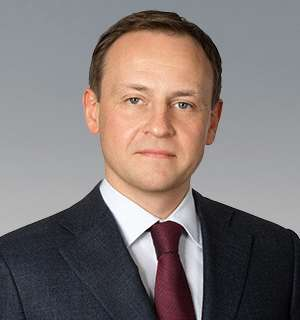

Person profile · РОЙ.МАРКЕТ investigation
At a glance
Roles & corporate affiliations
| Entity | Role | Since | Source |
|---|---|---|---|
| Autonomous Non-Profit Organization "The Center for Uncrewed Vehicle Systems and Technology" (ЦБСТ's own EGRUL-registered English name) | role Secretary of the Supervisory Board; Head of United Russia’s Central Executive Committee | — |
Network
Related persons
Sanctions & screening
OpenSanctions aggregation (multi-regime — see archived match for full source_urls) — PLAUSIBLE match via OpenSanctions screening (score 0.92) — corroborated by this registry's own role finding and the already-archived Sidyakin/Bezrukov ЦБСТ podcast transcript, but NOT personal-ИНН-confirmed. [s0822]
Sources cited in this profile
| ID | Type | Locator | Captured | As of |
|---|---|---|---|---|
| s0228 | EGRUL extract | EGRUL extract (ul-1247700190430-20260815005804.pdf) | — | 2026-08-15 |
| s0822 | OpenSanctions screening record | OpenSanctions screening record (OPENSANCTIONS_aleksandr-sidyakin_20260824_aleksandr-sidyakin.json) | 2026-08-24 | — |
| s6919 | press coverage | press coverage (PRESS_20260907_investigator-org-ua-270974-rubinshteyn.txt) | 2026-09-07 | — |
| s7519 | transcript | transcript (TRANSCRIPT_20250214_er-ru-yakushev-bezrukov-tsbst-nabsovet.txt) | 2025-02-14 | — |
Generated from this investigation's registry (data/registry/) by scripts/build_person_profile.py. Not a substitute for reading the underlying primary sources listed above.